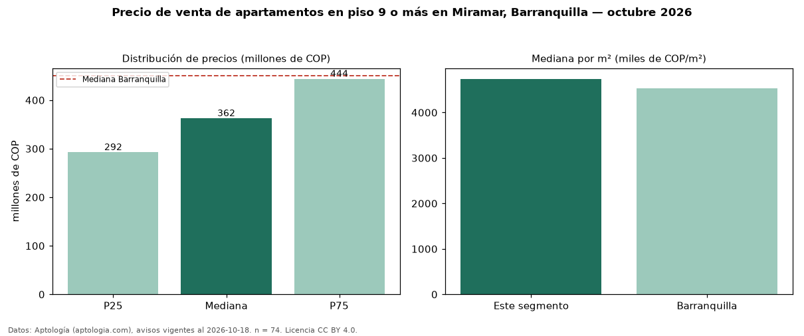

Precio de venta de apartamentos en piso 9 o más en Miramar, Barranquilla — octubre 2026
Con 74 avisos vigentes, el precio mediano de apartamentos en piso 9 o más en venta en Miramar, Barranquilla es COP 362 millones. Prácticamente coincide con la mediana de todos los apartamentos en venta de Miramar (COP 352 millones, n = 348); este segmento reúne el 21 % de esos avisos. Por metro cuadrado, la mediana es COP 4,74 millones/m² (n = 73), 0 % por debajo del conjunto de referencia (COP 4,74 millones/m²). El área mediana anunciada es 76 m². El segmento con más oferta es el de 3 o más habitaciones (70 avisos, mediana COP 368 millones). La administración mediana declarada es COP 330.000 al mes (n = 63). El estrato más frecuente es 4 (93 % de los avisos con estrato). La mediana de todos los apartamentos en venta de Barranquilla es COP 450 millones (−19 % de diferencia). Datos: Aptología (aptologia.com), CC BY 4.0 — https://www.aptologia.com/venta/barranquilla/miramar. Archivos: PDF, CSV con las cifras y gráfica PNG.

| Avisos únicos | 74 |
|---|---|
| Percentil 25 | COP 292.500.000 |
| Mediana | COP 362.500.000 |
| Percentil 75 | COP 443.750.000 |
| Mediana por m² | COP 4.739.583 |
Fuente: avisos vigentes de portales inmobiliarios recopilados por Aptología, deduplicados (mínimo 30 avisos únicos por celda). Precios pedidos, no cerrados. Fecha: 2026-10-18.